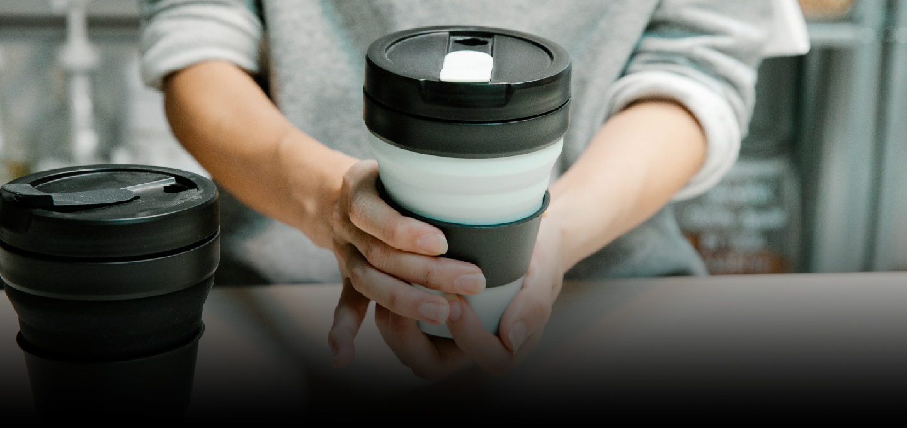

Reinventing Everyday Life Through Technology. Enriching Life.
ALLCOM is committed to enriching people's lives by combining precision technology with a deep understanding of human needs. We solve the small yet meaningful inconveniences of everyday life through innovation, creating greater comfort and convenience for everyone. This is ALLCOM's promise— to bring new value to every moment of our customers' lives.
-
Innovating Everyday Life Shaping the Future Through Technology.
Powered by Peltier technology, we deliver precise temperature control for greater everyday comfort.
Beyond products, we develop user-centered technologies and services that better understand and meet the needs of everyday life.
-

The Evolution of TumblersAs awareness of environmental protection and personal hygiene continues to grow, tumblers have become an everyday essential. Beyond simply holding beverages, the market for smart tumblers equipped with innovative features that enhance user convenience is expanding rapidly.